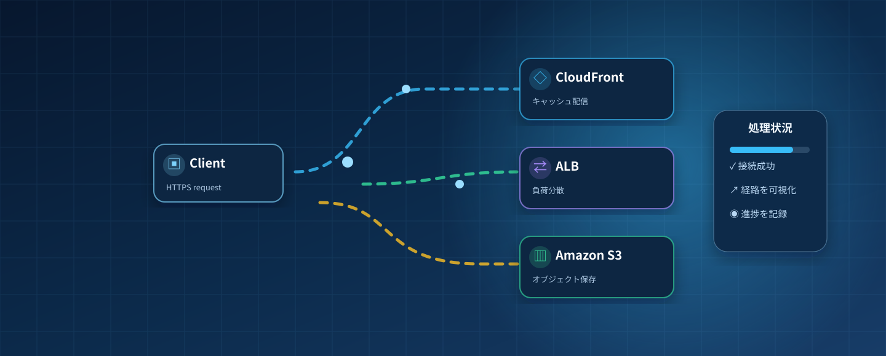

YOUR CLOUD JOURNEY
しくみがわかると、
設計が変わる。
見る → 理解する → 動かす → 壊す → 直す → 試す

図鑑の基本教材—サービスと一般概念を区別
再生できる教材—参照データから3件を実装
学習を完了した教材0このブラウザの記録のみ
学習をはじめる
図鑑をすべて見る →NEXT CHAPTER
未実装学びを、設計する力へ。
比較・構成シミュレーター・障害ラボ・問題演習・管理機能は今後の実装対象です。
SERVICE EXPLORER
サービス図鑑
役割を知って、使い分けの第一歩へ。基本版の抜粋教材です。
ARCHITECTURE IN MOTION
動きを見て理解する
AWS 実環境と接続しない、ステップ形式の教育用モデルです。
教材を読み込み中…
レビュー前のドラフト
理解のポイント
LEARNING PATH
学習ロードマップ
基礎から設計まで、4つの段階で進めましょう。
YOUR LEARNING RECORD
学習履歴
学習済みボタンで記録した教材だけを表示します。試験の正答率や資格の習熟度を示すものではありません。
基本版の履歴はこのブラウザの localStorage に保存されます。端末間同期はありません。
ブラウザに保存できないため、このタブを閉じると設定と学習記録が失われます。